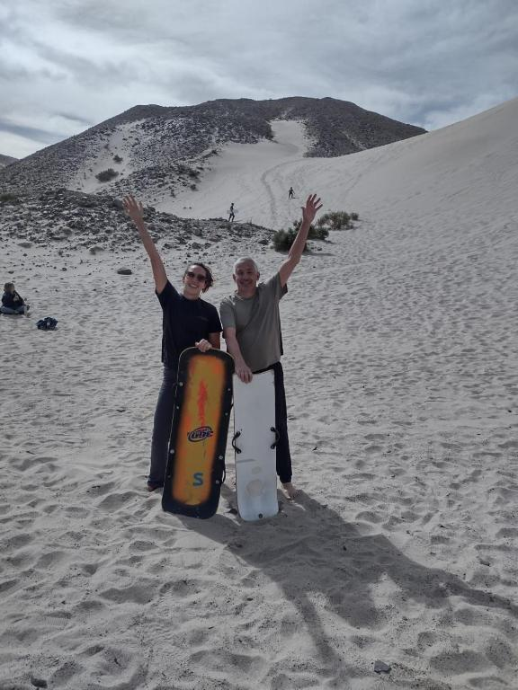
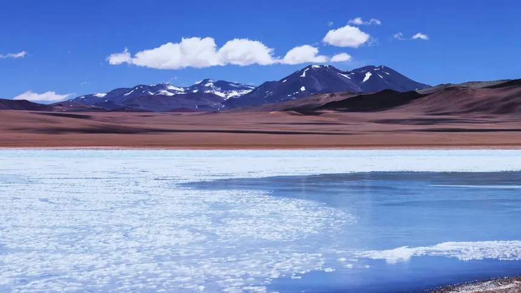
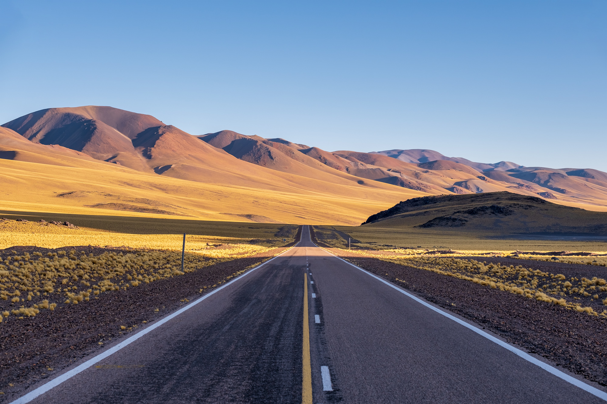
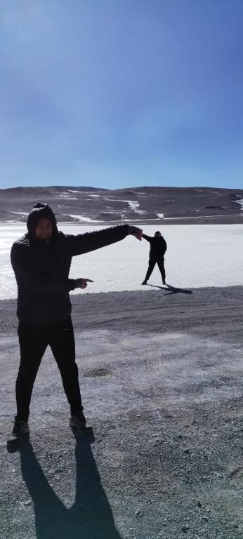
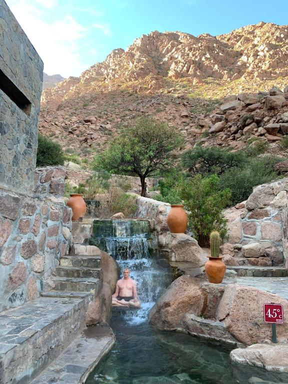
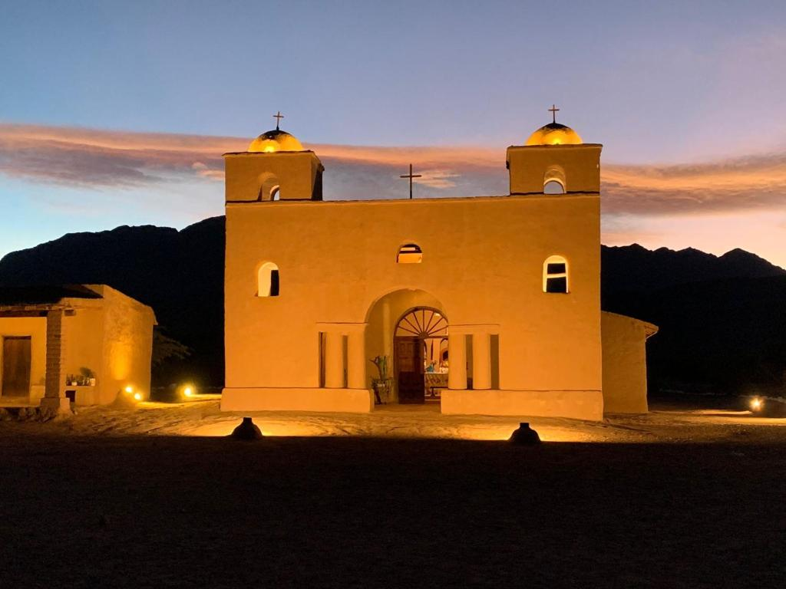
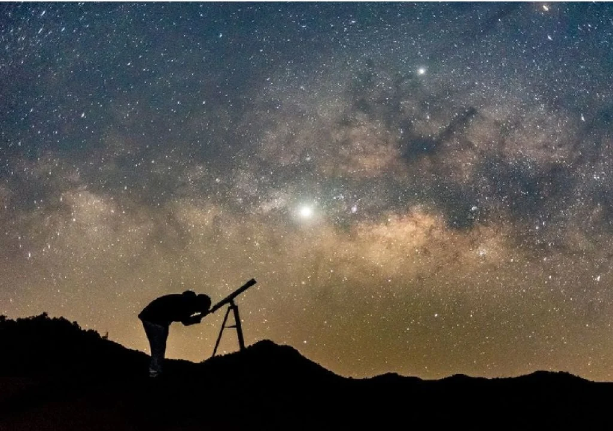

Excursiones que no se miden en kilómetros, sino en momentos
Explorá Catamarca como nunca: expediciones en 4x4 diseñadas para descubrir los paisajes más imponentes de la provincia.
"Caminar, observar, respirar… y dejar que el paisaje haga su magia."
Doble Tracción Experience
Explorá Catamarca con Juan, tu guía experto. Nuestra propuesta no se limita a paquetes cerrados; creamos travesías personalizadas que se amoldan a tus intereses y tiempos.
Ideal para aventureros, fotógrafos de paisajes y familias o grupos pequeños que deseen una inmersión real, privada y a su propio ritmo.
Atención Personalizada
Trato directo, seguro y viajes 100% a medida.
Rutas Únicas
Recorridos distintos que escapan al turismo masivo.
Conocimiento Profundo
Interpretación de historia, geología y costumbres locales.

Rutas y Destinos Únicos
La joya de la corona y otros circuitos inolvidables.

Balcón del Pissis
Uno de los paisajes más imponentes de la cordillera de los Andes con vistas que quitan el aliento.

Paso de San Francisco
Recorridos por Las Angosturas, lagunas de altura como Los Aparejos y la deslumbrante Laguna Turquesa.

Experiencias Flexibles
Circuitos "todo terreno" que pueden culminar con visitas sorpresa, como relajarse en termas durante la noche.
Destinos Imperdibles

Puesto Anillaco
Descubrí la historia profunda de la Ruta del Adobe en este rincón lleno de mística y tradición.

Termas de Fiambalá
Aguas termales enclavadas en la montaña. El lugar ideal para relajarse después de una larga expedición.

Iglesia de la Falda
Una joya arquitectónica histórica construida en adobe, reflejo de la cultura y devoción de nuestra tierra.
Astroturismo
Con la pureza de los cielos catamarqueños, te invitamos a una experiencia estelar inolvidable. Alejados de la contaminación lumínica, el universo se despliega ante tus ojos.
